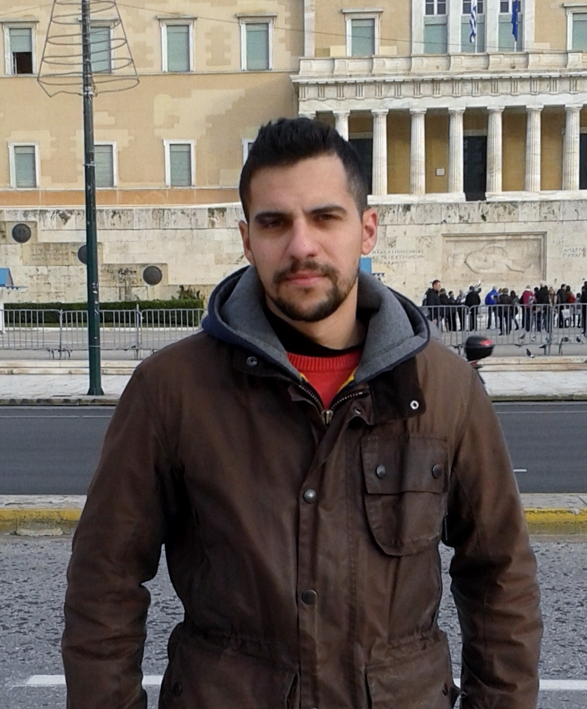

<!DOCTYPE html>
<html>

<head>
	<title>George Kontoudis | Mechanical Engineer</title>
	<meta http-equiv="Content-Language" content="en-us">
	<meta http-equiv="Content-Type" content="text/html; charset=windows-1252">
	<link href="styles.css" rel="stylesheet" type="text/css" />
        <link rel="icon" type="image/jpeg" href="photos/favicon.jpg" />
        
        <script>
  (function(i,s,o,g,r,a,m){i['GoogleAnalyticsObject']=r;i[r]=i[r]||function(){
  (i[r].q=i[r].q||[]).push(arguments)},i[r].l=1*new Date();a=s.createElement(o),
  m=s.getElementsByTagName(o)[0];a.async=1;a.src=g;m.parentNode.insertBefore(a,m)
  })(window,document,'script','//www.google-analytics.com/analytics.js','ga');

  ga('create', 'UA-66629383-1', 'auto');
  ga('send', 'pageview');

</script>

</head>


<body style="background-color:#F2EBF8">

<script>
function copy(dest, source) {
  if(dest.source == source) {
    dest.innerHTML = "";
    dest.source = null;
  }
  else {
    dest.innerHTML = source.innerHTML;
    dest.source = source;
  }
  dest.blur();
}
</script>

<font class="content" color="#600000">
<h1>Georgios P. Kontoudis</h1>
</font>

<h3><a href="http://www.controlsystemslab.gr/main/">Control Systems Lab</a> | <a href="http://www.mech.ntua.gr/en/home">School of Mechanical Engineering</a> | <a href="http://www.ntua.gr/index_en.html">National Technical University of Athens (NTUA)</a></h3>

<table width="40%" class="header">
<tr> 
<td class="center">
<table class="image">
<tr> <td></tr> </td>
</table>

<td class="center">
<p>
<!--<u><font style="font-size: 16pt"><b>George Kontoudis</b></font></u>-->
<!--<br><span lang="el">[&#915;&#953;&#974;&#961;&#947;&#959;&#962; &#922;&#959;&#957;&#964;&#959;&#973;&#948;&#951;&#962;]</span>-->
<font style="font-size: 16pt"><b>Personal Websites:</b></font>
<li><b><a href="http://www.controlsystemslab.gr/main/members/kontoudis/">Control Systems Lab</a></b>
<li><b><a href="https://github.com/gkontoudis">GitHub</a></b>
<li><b><a href="https://scholar.google.gr/citations?hl=el&user=xlpEAMQAAAAJ">Google Scholar</a></b> 
<li><b><a href="http://www.researchgate.net/profile/George_Kontoudis">ResearchGate</a></b>
<li><b><a href="https://www.linkedin.com/pub/george-kontoudis/62/804/b26">LinkedIn</a></b>
        

</td> 
</tr>
</table> 
<br><br>

<i>Last Update: August 12, 2015</i>


<p align="center">
<i><font class="content" color="#600000">
</i></font>
</p>


<hr>
<!--Hello I am George and in Greece I hear to &#915;&#953;&#974;&#961;&#947;&#959;&#962;. As every MechE I mostly like machines. I enjoy solving problems and building things that will help people one day. Everything you need to know about my research activities is following bellow.	
<br><br>-->

<h2><b>Short Biography</b></h2>

Currently, I am pursuing a 5-year diploma degree (equivalent to MSc) in Mechanical Engineering at National Technical Univeristy of Athens (NTUA) following the option of Mechanical Design. At March of 2014, I enrolled as an Undergraduate Research Assistant to the NeuroRobotics Group at Control Systems Lab working with <b>Prof. Kostas J. Kyriakopoulos</b>. Previously, I attended Piraeus University of Applied Scinces where I received Bachelor’s degree in Mechanical Engineering.
 I recently won the <b><a href="http://www.robotdalen.se/en/robotdalen-innovation-award">2015 Robotdalen Innovation Award</a></b>. Alongside my studies, I worked 1,5 year as an Aircraft Engineer trainee at <b><a href="https://en.wikipedia.org/wiki/Olympic_Airlines">Olympic Airlines</a></b>, 3 years as a Mechanical Engineer and 2 years as an Operation & Maintenance Supervisor of a Desalination Plant at <b><a href="http://www.sychem.gr/en">Sychem</a></b>.

<p>You can find more about me in my <b><a href="CV/Kontoudis_CV.pdf">CV</a></b>.
<br><br>


<h2><b>Research Interests</b></h2>

My research interests include Robot Hands Design, Prosthetics, Robot Kinematics, Mechanisms, Grasping and Manipulation.
<br><br>


<h2><b>Initiatives</b></h2>

I am member of OpenBionics Initiative. OpenBionics is an open source initiative for the development of affordable, light-weight, modular, robot hands and myoelectric prosthetic devices, that can be easily reproduced using off-the-shelf materials. The primary focus of the proposed design is to provide multiple low-cost task-specific robot hands instead of one that is complex and expensive.

<p>More information can be found at <b><a href="http://www.openbionics.org">OpenBionics</a></b> website.
<br><br>

<h2><b>Publications</b></h2>
<h3><b>Conference Papers</b></h3><p>
</h3>[1] <b>George P. Kontoudis</b>, Minas V. Liarokapis, Agisilaos G. Zisimatos, Christoforos I. Mavrogiannis and Kostas J. Kyriakopoulos, “Open-Source, Anthropomorphic, Underactuated Robot Hands with a Selectively Lockable Differential Mechanism: Towards Affordable Prostheses”, IEEE/RSJ International Conference on Intelligent Robots and Systems <b>(IROS)</b>, Hamburg (Germany), 2015.
<br><a href="Publications/Kontoudis2015IROS.bib">[BibTeX]</a> <a href="Publications/IROS2015_Kontoudis_AffordableProstheses.pdf">[PDF]</a> <a href="https://www.youtube.com/watch?v=LoG_JTOIMO4" target=”_blank” >[Video]</a>

<h3>
<b>Technical Reports</b></h2><p>
</h3>[1] Agisilaos G. Zisimatos, Minas V. Liarokapis, Christoforos I. Mavrogiannis, <b>George P. Kontoudis</b> and Kostas J. Kyriakopoulos, “How to Create Affordable, Modular, Light-Weight, Underactuated, Compliant Robot Hands”, Control Systems Lab, School of Mechanical Engineering, National Technical University of Athens, January 2015.
<br> <a href="Publications/Zisimatos2015TR.bib">[BibTeX]</a> <a href="Publications/TR2015_OpenBionics_RobotHandsGuide.pdf" target=”_blank” >[PDF]</a>
<br><br>


<h2><b>Links</b></h2>

People that I have collaborated with:
<li><b><a href="http://www.controlsystemslab.gr/kkyria/">Kostas Kyriakopoulos</a></b>, Professor, School of Mechanical Engineer, National Technical University of Athens (NTUA)
<li><b><a href="http://www.minasliarokapis.com/">Minas Liarokapis</b></a>, Post-Doc Associate, Grab Lab, School of Engineering and Applied Science, Yale University
<li><b><a href="http://users.ntua.gr/el08087/">Agisilaos Zisimatos</b></a>, Undergraduate Student, School of Electrical and Computer Engineer, National Technical University of Athens (NTUA)
<li><b><a href="http://www.cmavrogiannis.com/">Christoforos Mavrogiannis</b></a>, PhD Candidate, Sibley School of Mechanical and Aerospace Engineering, Cornell University
<!--<p>Other interesting links:
<li><b><a href="https://www.youtube.com/watch?v=rA9tm0gTln8">Video</a></b>, Denavit-Hartenberg Reference Frame Layout
<li><b><a href="https://www.youtube.com/watch?feature=player_embedded&v=F40ZBDAG8-o">Video</a></b>, How differential gear works
<li><b><a href="https://www.youtube.com/watch?v=49JwbrXcPjc">Video</a></b>, Visualization of the Coriolis and centrifugal forces
<li><b><a href="https://www.youtube.com/watch?v=6BaECAbapRg#t=11">Video</a></b>, How Clutces Work
<li><b><a href="https://www.youtube.com/watch?v=kidWBeyOMA0">Video</a></b>, How nuts and bolts are made
<li><b><a href="https://www.youtube.com/watch?v=ONz6S48QgEk">Video</a></b>, How It's Made Ball Bearings-->
<br><br>


<h2><b>Contact Details</b></h2>
Research Advisor: <b> Kostas J. Kyriakopoulos</b><br>
Control Systems Laboratory<br>
School of Mechanical Engineering <br>
National Technical University of Athens<br>
9 Heroon Polytechniou Str. <br>
Zografou, Athens - 15780, Greece <br>
Office: School of Mechanical Engineering, Building M, Basement<br>
<b>Email: mc11681@mail.ntua.gr | g.kontoudis@hotmail.com</b><br>
Phone: 210 772 4012
<br><br>


</body>
</html>
